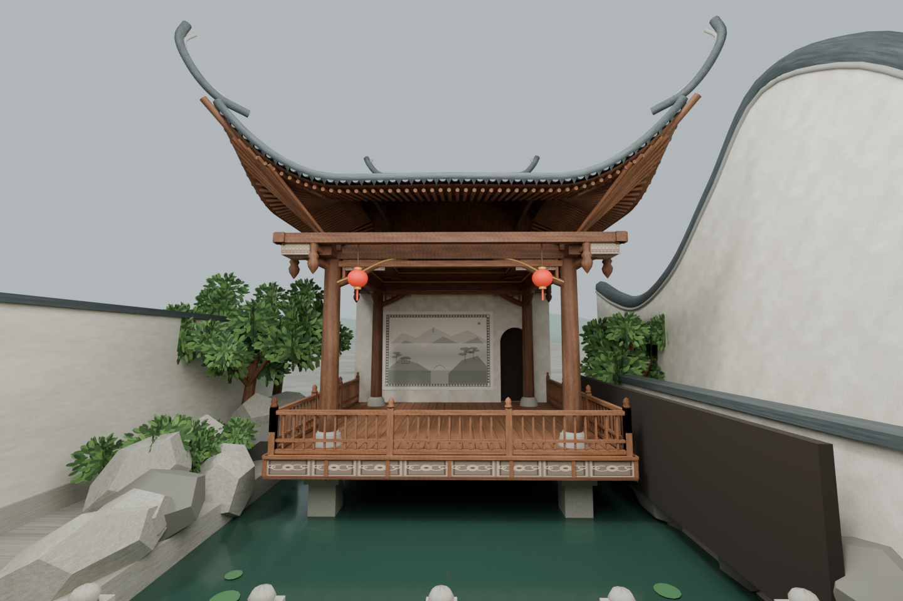

福州 · 三坊七巷 1:1 真实地理街区 · 衣锦坊 #04 水榭戏台
隔水看戏 · 三坊七巷
1:1 OSM 真实建筑轮廓与路网 + 水榭戏台精建
参考官源、实拍与公开 GIS 人工还原 · 非测绘扫描
参考官源、实拍与公开 GIS 人工还原 · 非测绘扫描
衣锦坊 4 号水榭戏台 · 三坊七巷历史街区（全区示意）
正在载入三维场景

隔池正看 · 柔和天光与杉木构架

衣锦坊 4 号水榭戏台与三坊七巷鱼骨格局
- 核心水榭戏台：约 60 ㎡ 水池立四根花岗岩石墩，上承石梁与约 30 ㎡（5.5×5.5m 非实测）杉木台面；四柱内收，台边雕花挂板（示意）与三面低木栏；九脊歇山顶福州大翘角，瓦垄/瓦当/密集椽木、雕花弓梁、垂莲柱、三层方形藻井（纹样示意），后墙淡墨山水壁画（示意）。
- 院落与花厅：仅西侧设白灰曲线福建马鞍墙与带雪洞矮墙（非徽派马头墙）；池北岸为连续浮雕花卉石栏，对岸为双层前廊后堂花厅与 12 扇朝南木格门窗（细部示意）。
- 三坊七巷完整鱼骨格局（示意）：以南北向南后街为中轴（南北牌坊、骑楼商铺、红灯笼），西侧自北向南排布衣锦坊、文儒坊、光禄坊（三坊），东侧自北向南排布杨桥巷、郎官巷、塔巷、黄巷、安民巷、宫巷、吉庇巷（七巷），含安民巷口网红爱心树、小黄楼园林、光禄吟台、南端安泰河与闽派曲线马鞍墙深宅院落群（整体尺度与细部均为示意）。
注：本项目系据官源文献、Siyuwj #20/#24 实拍及公开街景资料人工还原，非三维扫描或测绘方案；凡无实测依据的尺度与细部均标注「示意」。详见 SOURCES.md。